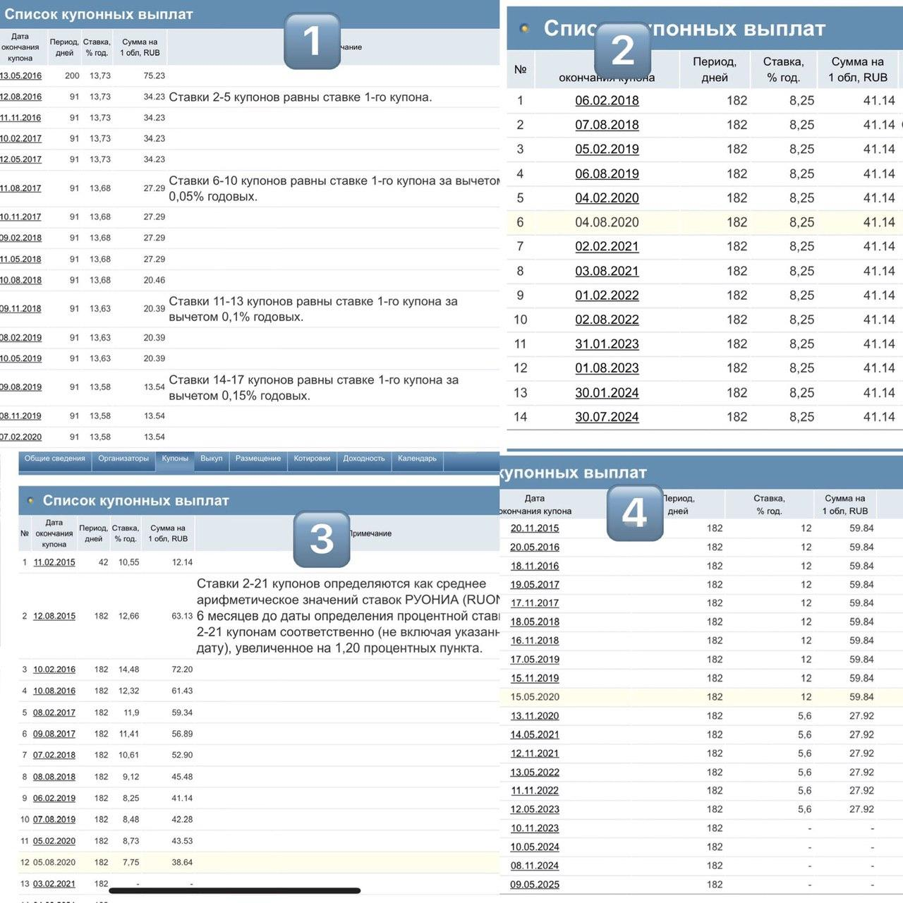
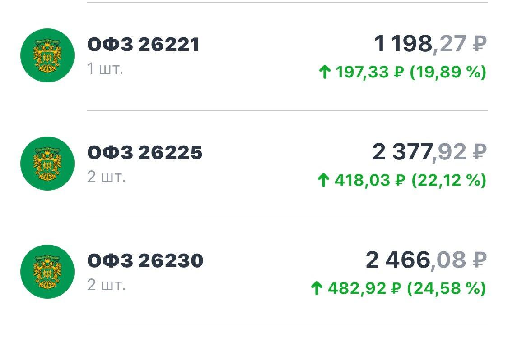

- https://www.opentrainer.ru/courses/ - Курсы Открытия
- https://www.opentrainer.ru/courses/akademiya-uspeshnogo-treydinga-2-0/ - курс сайта Открытие
- Smart-lab
- https://docs.google.com/spreadsheets/ - Таблица дивидендов Первушина Артема
-
- Инструменты инвестора
- Google - теория Доу
- https://simplywall.st/about - Simply Wall Street
- https://finviz.com/ - Finviz.com - графики всякие
- https://ru.tradingview.com/ - куча удобных графиков бесплатно
- https://ru.investing.com/ - Новости, идеи
- https://tradingeconomics.com/ - Еще графики
- https://www.dividend.com/ - Думаю, понятно
- https://www.dohod.ru/analytic/bonds/ - Анализ облигаций. Beta
-
- Сделки инсайдеров
- https://invest-idei.ru/insider-radar/ - Инсайдер-радар. Сделки менеджеров и крупных инвесторов
- http://openinsider.com/ - Сделки инвесторов
- https://www.gurufocus.com/insider/ - Что-то по сделкам инсайдеров
- https://journal.open-broker.ru/taxes/ - информация по снижению налоговой базы, за счёт переноса убытка прошлых лет.
- https://fs.moex.com/files/17659 - Презентация MOEX по ЛДВ
-
Не все знают, что купонные выплаты по облигациям бывают разного типа.
Чтобы ожидания и реальность сошлись, очень важно точно понимать, какие именно облигации вы покупаете и от чего зависят выплаты по купонам.✅ постоянный купон. Всем понятный и известный. У облигации есть номинал, и вы знаете точный % от номинала, который вы получите в виде выплаты купона.
1000 р номинал, 8% купон.
80 р - вы получаете. Процентная ставка купона не меняется до погашения облигации и вы точно знаете сколько денег получите.✅ фиксированный. Вы знаете точную ставку по купону, она зафиксирована, но при этом она не одна и та же на протяжение всего срока обращения бумаги.
Пример.
С 1 по 3 год купон 8%
С 3 по 5 год купон 7,5%
С5 по 10 год купон 9%✅ переменный купон. Тут внимательно! Такие бумаги встречаются часто.
Допустим бумага со сроком погашения 10 лет. С 1 по 3 год купон 10%, а дальше неизвестность и надпись «оферта».
Оферта это ваша возможность погасить облигацию по номиналу. В эту дату вы можете получить номинальную стоимость и «вернуть облигацию». Что после оферты? Эмитент в праве изменить % по купону. Например понизить его. Важно - вы не знаете что произойдёт с купоном, пока не пройдёт оферта.
Зачем это эмитенту? Например, снизилась ключевая ставка, деньги стали дешевле на рынке... выпустив такие облигации эмитент обезопасил себя от возможной переплаты вам.✅ плавающий купон. Привет ОФЗ в составе которых есть цифры 29.

Купон по таким бумагам привязан к какой то ставке. Например к ставке ЦБ или RUONIA. Соответственно, вы ни как не сможете угадать, какой будет следующий купон. ЦБ понизил ставку, ваш купон понизится вместе с ней, и обратно так же.
Такие бумаги дают вам постоянно «рыночную доходность». Они так же интересны, если вы ожидаете повышение ставки ЦБ в будущем. -
У облигации есть номинал и рыночная цена. Возникает вопрос - от чего зависит рыночная цена облигации, и почему облигация торгуется выше или ниже номинала?
1. Ставка ЦБ.
Ставка ЦБ - это ставка, по которой ЦБ кредитует банки. Фактически она показывает, сколько стоит сегодня пользоваться деньгами.
Допустим, ставка ЦБ 7%, и мы купили облигацию с купоном 8%. Выходит новость о том, что ставка ЦБ будет снижаться и станет 6%. Что это значит? Деньги станут дешевле, взять в долг можно будет под меньший %. Новые выпуски облигаций будут выпускаться с меньшим купоном по сравнению с теми, которые выпускались до снижения ставки. Как следствие, цена на старые выпуски облигаций (которые были выпущены до снижения ставки) будет расти.
Это логично, ведь старые выпуски приносят большую доходность чем новые. Логично и обратное - если ставка ЦБ растёт, то цена на старые выпуски будет падать.2. Риск эмитента.
Нужно понимать, что корпоративные облигации связаны с риском. Выпустить облигацию может кто угодно. По облигациям не редки технические дефолты.3. Срок до погашения.
Чем дальше срок погашения, тем более рискованная бумага. Опять же, это напрямую связанно с тем, что мы не можем прогнозировать ставку ЦБ, а значит и берём на себя риск изменения доходности в меньшую сторону. Ну и чем ближе срок погашения, тем быстрее цена стремится к номиналу.4. Если облигация торгуется ниже номинала, то задумайтесь "почему?")
С большой вероятностью по данной бумаге есть высокий риск и ненадёжность эмитента.Надеюсь, что стало немного понятней, как формируется рыночная цена облигаций.

Ниже скрин сегодняшний с ОФЗ
Бумаги были куплены 13 -16 марта.
Скрин для того, чтоб вы поняли, как снижение ставки отразилось на рыночной цене старых выпусков. Ну и для общего понимания, что по облигациям, можно иметь хорошую доходность. Главное - понимать их механизм.